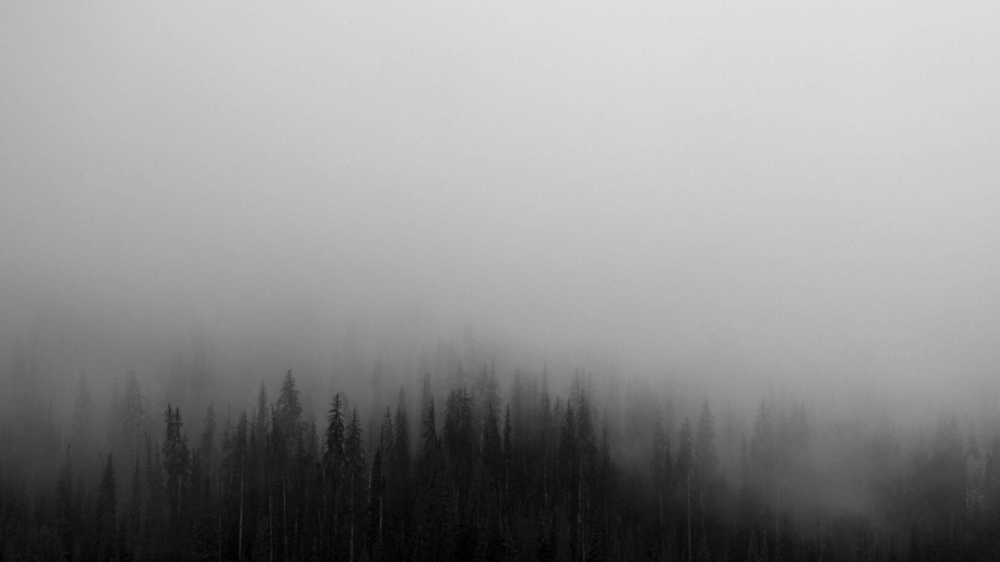
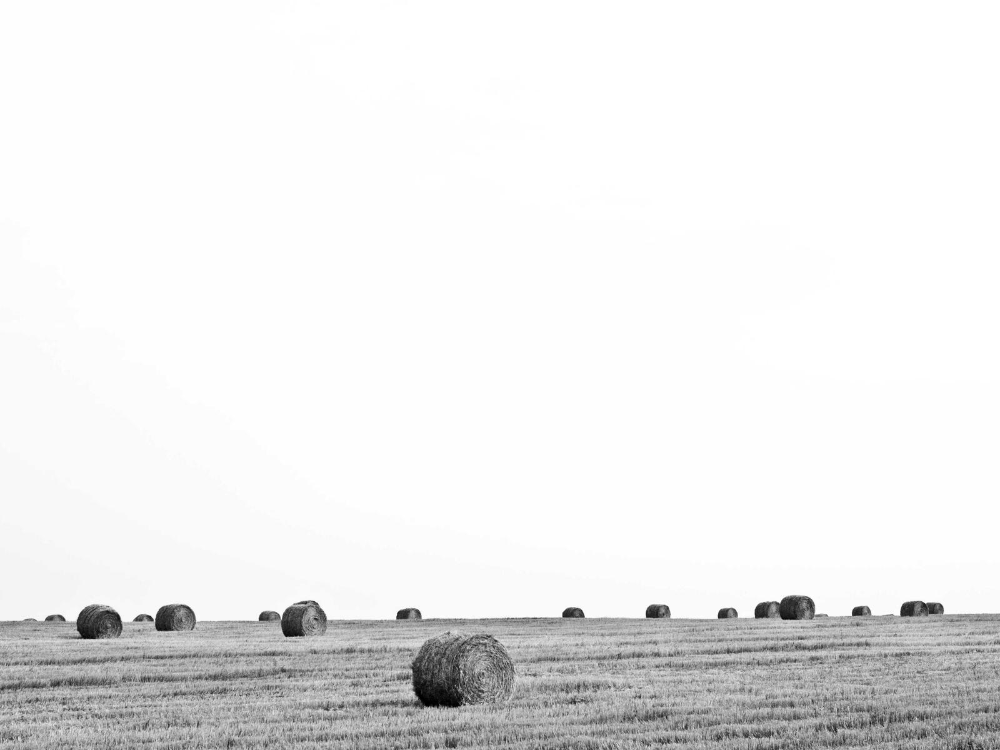

Keep scrolling.
The PageWell log
Something is waiting at the bottom. It has been waiting a very long time.
Wellhead: your screen
Target depth: 6,371 km
Estimated time: one sitting
Surface photographs: Patrick Hendry, Pavel Voinov and Sonja Langford, via Unsplash.
1 m
Topsoil.
Dark, damp, recently rained on. Behind you now: the sky, the weather, and everything you have ever owned.
The Page · well logKeep scrolling.6,371 km to go
Almost there.
(Twelve metres down. 6,371 kilometres to go. This claim will not survive the next screen.)
That was a lie.
There are 6,371 kilometres left. That was the first and last time this page will do that.
This layer is glacial till: sand, gravel and boulders dragged here by ice, then left. The ice is gone. The sand stayed.
The Page · well logKeep scrolling.6,371 km to go
40 m
Granite.
The deepest foundations of anything ever built stop a few metres behind you. Everything below is older than every living thing.
Real drilling gets about a metre an hour through granite. You are doing about forty kilometres an hour. Nothing about your descent is legal in real geology.
The Page · well logKeep scrolling.6,371 km to go
120 m
The last water.
Groundwater. The last rain you will ever see. Some of it fell before your grandparents were born.
The Page · well logKeep scrolling.6,371 km to go
828 m
The Burj, inverted.
The tallest building on Earth is 828 metres tall. Here it stands on its head, spire flush with the surface.
You have scrolled the height of the tallest thing humans ever built, in the wrong direction.
The Page · well logKeep scrolling.6,370 km to go
1 km
The metre retires.
One kilometre down. From this mark the page measures in kilometres, because the page is not made of patience.
At this pace you are descending about twenty-six kilometres a second. Escape velocity is 11.2. You are not escaping. You are arriving.
The Page · well logKeep scrolling.6,370 km to go
3,700 m
An ocean, minus the ocean.
The sea went its own way; the darkness stayed. This is exactly as deep as the average ocean, and exactly as dark.
Most of the deep sea is empty. So is most of this. You are, statistically, not here either.
The Page · well logKeep scrolling.6,367 km to go
8,848.86 m
Everest, inverted.
The tallest mountain would fit exactly in this hole, peak flush with the surface, a small white hill above a very long hole.
6,362 kilometres to go.
The Page · well logKeep scrolling.6,362 km to go
Almost there.
(We lied again. It is a compulsion. Still 6,362 kilometres. The next time this page says it, it will be telling the truth.)
10,994 m
The Challenger Deep, dry.
The deepest water on the planet is 10,994 metres down, deeper than Everest is tall.
No water here, but the number is exact, and exactness is the only decoration this sheet can afford. At the real Challenger Deep there are tripod fish standing on three stiff legs. They have no opinion about you. Neither does this hole — yet.
The Page · well logKeep scrolling.6,360 km to go
12,262 m
Humanity's deepest hole.
From 1970 to 1994 the Soviet Union drilled the Kola Superdeep Borehole to 12,262 metres, to see what was down here.
What was down here: rock, water, and gas. The hole is 23 centimetres wide. You are the only visitor it has ever had.
The Page · well logKeep scrolling.6,359 km to go
It gets quieter.
Mind the mantle.
Do not stop now.
6,352 kilometres to go.
Keep scrolling.
35 km
The crust ends here.
Below this line, nobody has ever stood. Not a miner, not a drill — nobody. You are the first visitor.
It is called the Moho, short for Mohorovičić. Pronounce it mo-ho-ro-vee-chitch. Everyone gets it wrong, including this page.

The Page · well logKeep scrolling.6,336 km to go
100 km
The rock goes soft.
Rigid rock ends here. Everything below flows, slowly: a few centimetres a year, like a glacier made of stone.
The mantle has been flowing for four billion years. You are moving twenty million times faster than it, which is why it is annoyed.
The Page · well logKeep scrolling.6,271 km to go
410 km
The transition zone.
The olivine crystals squeeze into new shapes under the pressure. This is the only interesting thing for 250 kilometres.
Keep scrolling. It is not asking much of you, compared to what it is asking of the olivine.
The Page · well logKeep scrolling.5,961 km to go
660 km
No light has ever been here.
Not one photon of sunlight has ever reached this depth. Not a rumour of it.
Below you: 2,080 kilometres of rock, and then something much, much brighter.
The Page · well logKeep scrolling.5,711 km to go
Everything you have passed is standing in the tray.
The slips stand tallest where the deepest landmark is. Nothing in this tray is invented.
828 m
The Burj Khalifa, upside down. Spire at the surface; you at its foundation.
passed
1 km
The metre retired here. The page switched to kilometres out of self-respect.
passed
3,700 m
Average ocean depth. No ocean present. Darkness as advertised.
passed
8,848.86 m
Everest, inverted. Peak flush with the surface, small white hill above a long hole.
passed
10,994 m
The Challenger Deep, dry. Deeper than Everest is tall.
passed
12,262 m
The Kola hole. Twenty-three centimetres wide, and still the deepest anyone has ever dug.
passed
2,740 km
The D, double prime.
150 kilometres of the strangest rock on the planet, right above the core, named after a jump in sound waves.
Down here the only sounds are pressure and time. Listen. …Nothing was there. Keep scrolling.
The Page · well logKeep scrolling.3,631 km to go
2,890 km
Liquid iron.
It is about 4,000 degrees, it moves like a river, and it runs the compass in your pocket.
You are inside the engine now. Every needle on the surface is answering to this room. Nothing on the surface has noticed. Keep scrolling.
The Page · well logKeep scrolling.3,481 km to go
5,150 km
Solid iron, 5,400 degrees.
As hot as the surface of the Sun. The Sun has been informed and is flattered.
The pressure here is 3.6 million times the air at the surface. Standing anywhere else on Earth you would explode. Here, you are politely compressed.
The Page · well logKeep scrolling.1,221 km to go
That is the whole planet.
6,371 kilometres of Earth are behind you: every rock, every layer, every number on this sheet.
Except there is one thing left. It is standing at the bottom, and it has been standing there the whole time.
The Page · well logKeep scrolling.0 km to go
The descent, added up.
Every layer above you, listed the way a well log lists them. The numbers are geology's, not this page's.
Descent log, itemised
| Crust | ||
|---|---|---|
| Continental crust, average | 35 | |
| Mantle | ||
| Upper mantle | 375 | |
| Transition zone | 250 | |
| Lower mantle | 2,080 | |
| D-double-prime layer | 150 | |
| Core | ||
| Outer core, liquid | 2,260 | |
| Inner core, solid | 1,221 | |
| Your descent | 6,371 km |
6,371 km
The sum of the slip. Check it; geologists did the hard part.
Keep scrolling.
One thing remains.
Almost there.
He can hear you.
One entry is still missing from the log.
The unlogged visitor.
You are at the bottom of the world. The final entry stands directly below this card, and it has been waiting since the surface.
Keep scrolling.last one
Thanks for scrolling.
He watched all 6,371 kilometres of it.